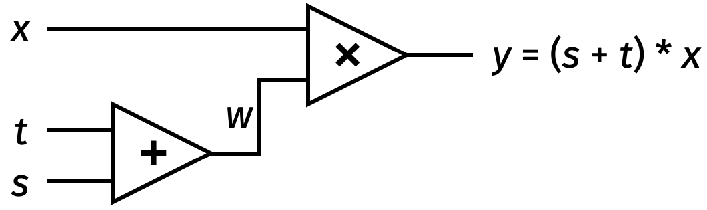

18 Multi-party computation
Announcements
- Please pick up your card
- Wed 11/11 at 8pm: Homework 7 due, with a grace period until today at 10pm (NIST beacon)
- Fri 11/13: Lab 11 on EKR sections 1.2–1.3 and NBFMG section 4.3
- Mon 11/16: Exam 3
- Fri 11/20 at 10pm: Exam 2 retries due
- Mon 11/23 at 8pm: Homework 8 due
Learning outcomes
By the end of today’s lecture, you will learn:
- The difference between protecting data at rest, in transit, and in use
- How to construct MPC against a passive Eve from cryptographic secret sharing
- How to construct MPC against an active Mallory using replication
18.1 Protecting data in use
We have now completed 3 units of the course, and have just 1 unit remaining.
- Protecting data integrity using digital signatures and message authentication codes
- Protecting data availability with broadcast and blockchains
- Protecting data confidentiality using encryption
- Protecting data science i.e., working with data you cannot see
We already saw a preview into Unit 4 when we discussed the Boston wage gap study.
- Companies want contribute payroll data to the study, while protecting data confidentiality
- We use cryptographic secret sharing to split the data
- We can calculate the city-wide aggregate without learning any information about individual employees or employers
In Unit 4, we continue our investigation into data confidentiality, and we will sometimes also discuss data integrity and availability.
We can sub-divide data confidentiality into three different scenarios.
Protecting data at rest, such as encrypting data on your local own hard drive
Protecting data in transit, for instance by using end-to-end encrypted messengers like Signal, WhatsApp, or iMessage
Protecting data in use, so that Alice can outsource her computation to Bob while still not allowing Bob himself to read the data!
Note how counterintuitive this sounds. In modern cloud computing, if you want someone to conduct data analysis for you, you have to give them your data.
We will spend the next few weeks exploring the problem of protecting data in use. My goal is to convince you that it is possible to conduct data science without data sharing.
To solve this problem, we will need a new data confidentiality tool besides encryption.
- Encryption has an all-or-nothing property: anyone who knows the symmetric key (like Alice or Bob) can read everything, whereas anyone without the key (like Mallory) learns nothing
- In Unit 4, the people you’re working with, the people you don’t fully trust, and your potential adversaries are the same people (in other words, perhaps Bob is also Mallory)
“Cryptography is how people get things done when they need one another, don’t fully trust one another, and have adversaries actively trying to screw things up.”
– Ben Adida
To use an analogy:
- Encryption is like putting your data inside a lockbox
- The new tools we will design in Unit 4 are like working with the data while it is inside the box
18.2 Secret sharing
For this journey, we will look at the one-time pad in a new way. Recall that a one-time pad uses the xor function \(\oplus\) to protect a secret message \(P\) by performing \(P = K \oplus C\).
If the attacker sees the ciphertext \(C\) but not the key \(K\), then the cipher is perfectly secret.
The adversary has learned nothing about the secret message, in a probabilistic sense
Concretely, an adversary who only sees \(C\) but not \(K\) cannot distinguish between any two possible values \(P_0\) and \(P_1\) of the secret message
\[ \Pr[\text{secret is } P_0\text{, given ciphertext } C] = \Pr[\text{secret is } P_1\text{, given ciphertext } C]\]
Here is an interesting thought experiment: what if we switch the roles of \(K\) and \(C\)? That is, what if:
- Mallory sees the key \(K\) but
- Mallory does not see the ciphertext \(C\)?
With a one-time pad, this scenario should never happen. But it’s illustrative to think about it anyway.
Interactive question. Is a one-time pad perfectly secret if the adversary sees the key \(K\) but not the ciphertext \(C\)?
- Yes
- No
Answer. Amazingly, yes!
- In the equation \(P = K \oplus C\), we can think of \(K\) as a “mask” that hides \(C\)
- But it is equally valid to think about \(C\) as a mask that hides \(K\)
This insight leads to the idea of cryptographic secret sharing! With secret sharing:
- A group of parties jointly hold a secret, but
- No small coalition in the group knows the secret
Defining secret sharing
Informally, a \((t, n)\)-secret sharing scheme splits the secret \(s\) into \(n\) shares, such that any \(t\) of the shares reveal no information about \(s\), while any \(t + 1\) shares allow complete reconstruction of the secret \(s\).
A formal definition follows.
Definition 18.1 Starting from a secret \(s\), a cryptographic secret sharing scheme is defined by two algorithms:
split\((s,t,n)\) is a randomized algorithm that splits a secret \(s\) into a vector of \(n\) shares \([s_1, s_2, \ldots, s_n]\), such that any subset of shares of size \(t + 1\) can reconstruct the original secret.reconstruct\((s_{i_1}, \ldots, s_{i_{t+1}})\) is a deterministic algorithm that takes \(t + 1\) distinct secret shares (i.e., a sub-vector of \(\vec{s}\)) and calculates the original secret \(s\).
The scheme must satisfy two security requirements.
Correctness states that if you
splitany secret \(s\), thenreconstructalways recovers the original secret \(s\).\(t\)-perfect secrecy is defined similarly as with a one-time pad: for any two possible secrets \(s\) and \(r\), and for any vector of \(t\) or fewer secret shares \(\vec{x} = \{x_{i_1}, x_{i_2}, \ldots, x_{i_t}\}\), it is the case that:
\[ \Pr[\text{all }x_i = s_i \mid \vec{s} = \text{split}(s, t, n)] = \Pr[\text{all }x_i = r_i \mid \vec{r} = \text{split}(r, t, n)].\]
In words: perfect secrecy says that the shares held by a coalition of \(\leq t\) parties have an equal probability of being shares of \(s\) or shares of \(r\).
Boolean secret sharing
Today, we will contruct two (related) secret sharing algorithms.
Scenario. Suppose that Susie has a secret \(s\) that she wants to split between two of her friends Alice and Bob. She wants each friend to hold onto one share of the secret on their hard drive. This way:
- If Susie loses her secret in the future, she can recover it by talking to both of them.
- If either one of Alice or Bob are actually adversarial (or have their hard drive compromised), the secret is still protected. This limits the trust that Suzie must place in each friend.
Here is a construction that allows Susie to accomplish this goal. It will split her \(\ell\)-bit secret \(s\) into two shares.
- Choose the share \(s_1\) uniformly at random among all bitstrings of length \(\ell\)
- Calculate \(s_2 \gets s \oplus s_1\) (where \(\oplus\) denotes the boolean-
xoroperation) - Send \(s_1\) to Alice, and send \(s_2\) to Bob
To reconstruct the secret later, calculate \(s \gets s_1 \oplus s_2\).
Theorem 18.1 This construction is a secret sharing scheme among \(n = 2\) parties that is perfectly secret against any \(t = 1\) adversarial party.
Correctness is easy to check. Both the split and reconstruct algorithms rely on the fact that \(s = s_1 \oplus s_2\).
Perfect secrecy follows a similar argument as a one-time pad.
- From Alice’s perspective: she knows \(s_1\) but not \(s_2\) or \(s\). To her, the scheme looks just like a one-time pad where \(s_1\) is akin to the ciphertext, and the unknown \(s_2\) acts as the key that perfectly hides the message \(s\).
- From Bob’s perspective: the situation is the same! He knows \(s_2\), but to him this looks just like a OTP ciphertext, and the unknown \(s_1\) acts as the key that perfectly hides the message.
This argument relies on a subtle but essential fact from probability: a uniformly-random bytestring \(s_1\) xored with an arbitrary bytestring \(s\) has the uniform distribution. Therefore, \(s_2\) on its own has the uniform distribution over all length-\(\ell\) bitstrings.
- For example, suppose that the secret \(s = \texttt{111..1}\)
- Then, \(s_2 = \texttt{111..1} \oplus s_1\) is the result of taking a uniformly-random bitstring and flipping all of its bits… which results in the uniform distribution
- The same idea holds for any choice of the secret \(s\)
Arithmetic secret sharing
We can also construct a secret sharing scheme using addition, rather than the xor operation. Here’s an alternative approach for Susie to split her secret:
- Choose the share \(s_1\) uniformly at random among all numbers that are \(\ell\) bits long (i.e., the numbers 0 to \(2^\ell-1\)).
- Calculate \(s_2 \gets s - s_1 \bmod{2^\ell}\).
- Send \(s_1\) to Alice, and send \(s_2\) to Bob.
To reconstruct the secret later, calculate \(s \gets s_1 + s_2 \bmod{2^\ell}\). Correctness and perfect secrecy hold for essentially the same reasons as before. (Do you see why?)
Also, both boolean and arithmetic secret sharing immediately generalize to the \(n\) party setting.
- Susie can
splither secret \(s\) among \(n\) parties by sampling shares such that: \[ s = s_1 + s_2 + \cdots + s_n \bmod{2^\ell}\] - All \(n\) parties must honestly participate in order to
reconstructthe original secret \(s\) - Perfect secrecy is achieved against any subset of \(t = n - 1\) parties, because the final share acts like a one-time pad to hide the secret
18.3 Secure multi-party computation
Let’s consider the following setting:
There are \(m\) people who possess sensitive data \(x_1, x_2, \ldots, x_m\)
They want to outsource this data to a collection of \(n\) computing parties \(P_1, P_2, \ldots, P_n\)
- The computing parties could be the same people as the data holders
- Or they could be different companies like cloud providers
A data scientist proposes to compute a function \(f\) of all sensitive data
Everyone agrees to contribute their data toward data analysis \(f\), and everyone believes that at most \(t\) of the \(n\) parties are adversarial
Cryptographically secure multi-party computation (often abbreviated as MPC) allows the parties to:
- Work together to calculate \(y = f(x_1, \ldots, x_m)\)
- Ensure that no coalition of up to \(t\) computing parties can learn anything about the input data
- The data scientist (who receives the output \(y\)) learns nothing about the inputs beyond what can be inferred from \(y\), in a Bayesian sense
Defining MPC
Now that we understand how MPC works informally, this is usually where I would provide a scientific definition. I’m not going to do that this time though, because the formal definition of MPC is somewhat complicated. You will read about it in next week’s required reading.
Instead, I reproduce below some text from a recent bill in the U.S. Congress that provides a legal definition of MPC. (Emphasis added by me.)
The term “secure multi-party computation” means a computerized system that enables different participating entities in possession of private sets of data to link and aggregate their data sets for the exclusive purpose of performing a finite number of pre-approved computations without transferring or otherwise revealing any private data to each other or anyone else.
We can consider MPC against two kinds of adversaries (the same ones we considered for encryption):
- The passive eavesdropper Eve
- The actively-malicious adversary Mallory
Let’s begin by considering MPC against a passive eavesdropper Eve. Remember that Eve promises to follow the rules of a cryptographic protocol, but she tries to learn sensitive data along the way.
18.4 MPC against Eve
In general, secure multi-party computation (MPC) protocols have three steps:
- The data holders split their secrets \(x_1, x_2, \ldots, x_m\), and send one share to each computing party
- The computing parties perform some calculation over the secret shares
- The computing parties give shares of the result to the data scientist, who can reconstruct \(y = f(\vec{x})\)
Steps 1 and 3 come directly from the split and reconstruct operations of the secret sharing construction.
MPC of addition
We have already seen how arithmetic secret sharing can be used to build a secure computation of addition. This is how we solved the Boston Women’s Workforce Council’s problem.
|
\(a\) |
\(b\) |
\(c\) |
\(a + b + c\) |
||
|---|---|---|---|---|---|
| \(a_1\) | \(b_1\) | \(c_1\) | \(a_1 + b_1 + c_1\) | ||
| \(a_2\) | \(b_2\) | \(c_2\) | \(a_2 + b_2 + c_2\) |
So we already have designed our first MPC algorithm… well, as long as the only data analysis we want to perform is addition.
The good news is that you can perform cryptographically secure multi-party computation of any function!
MPC of linear functions
The BWWC idea easily extends to cover all linear functions (in the sense of linear algebra).
- For instance, rather than calculating \(a + b + c\), suppose that we actually wanted to compute \(2a + 3b - c + 10\)
- Since we are using arithmetic secret sharing, and scalar multiplication also commutes over addition, each party can just compute its share of the result
|
\(a\) |
\(b\) |
\(c\) |
\(2a + 3b - c + 10\) |
||
|---|---|---|---|---|---|
| \(a_1\) | \(b_1\) | \(c_1\) | \(2a_1 + 3b_1 - c_1 + 10\) | ||
| \(a_2\) | \(b_2\) | \(c_2\) | \(2a_2 + 3b_2 - c_2 + 0\) |
MPC of multiplication
Next, let’s try to multiply two secrets \(a\) and \(b\) from two data holders.
|
\(a\) |
\(b\) |
\(c = a \cdot b\) |
||
|---|---|---|---|---|
| \(a_1\) | \(b_1\) | \(\color{red}{??}\) | ||
| \(a_2\) | \(b_2\) | \(\color{red}{??}\) |
Interactive question. Can we use the same idea to calculate secret shares of the product \(c = a \cdot b\)? That is: can each party take the product of their own shares and set \(c_i = a_i \cdot b_i\)?
- Yes
- No
Answer. This is not as easy to compute. This time we cannot rely solely on commutativity of addition; we need to consider the distributive law as well.
Recall the relationships between the secret variables and their arithmetic shares (all equations will be mod \(2^\ell\), but from now on I’m going to omit writing the modulus for brevity): \[\begin{align*} a &= a_1 + a_2 \\ b &= b_1 + b_2. \end{align*}\]
Hence, we want to compute: \[\begin{align*} c &= a \cdot b \\ &= (a_1 + a_2) (b_1 + b_2) \\ &= a_1 b_1 + a_1 b_2 + a_2 b_1 + a_2 b_2. \end{align*}\]
Here we reach a condundrum.
- BU can compute the term \(a_1 b_1\) on its own, and the Council can compute \(a_2 b_2\) on its own
- But it’s unclear how to compute the cross-terms \(a_1 b_2\) and \(a_2 b_1\) (remember that the computing parties cannot send their shares to each other, since that would break data confidentiality)
Replicated secret sharing
Today, I will show you one way (though not the only way!) to resolve this conundrum. It relies on two useful insights.
Insight #1: Add a third computing party.
This initially looks to make the calculation harder to perform. Now the distributive law says that we must calculate:
\[\begin{align*} c &= (a_1 + a_2 + a_3) (b_1 + b_2 + b_3) \\ &= a_1 b_1 + a_1 b_2 + a_1 b_3 \\ &\quad + a_2 b_1 + a_2 b_2 + a_2 b_3 \\ &\quad + a_3 b_1 + a_3 b_2 + a_3 b_3. \\ \end{align*}\]
|
\(a\) |
\(b\) |
\(c = a \cdot b\) |
||
|---|---|---|---|---|
| \(a_1\phantom{, a_2}\) | \(b_1\phantom{, b_2}\) | \(\color{red}{??}\) | ||
| \(a_2\phantom{, a_3}\) | \(b_2\phantom{, b_3}\) | \(\color{red}{??}\) | ||
| \(a_3\phantom{, a_1}\) | \(b_3\phantom{, b_1}\) | \(\color{red}{??}\) |
Insight #2: Give each computing party two of the three shares. This is called replicated secret sharing.
- This is still not enough information for any \(t = 1\) party to reconstruct any secrets
- But now any 2 of the \(n = 3\) parties have enough data to reconstruct
|
\(a\) |
\(b\) |
\(c = a \cdot b\) |
||
|---|---|---|---|---|
| \(a_1, a_2\) | \(b_1, b_2\) | \(c_1\) | ||
| \(a_2, a_3\) | \(b_2, b_3\) | \(c_2\) | ||
| \(a_3, a_1\) | \(b_3, b_1\) | \(c_3\) |
Moreover: there exists a computing party that can calculate each of the 9 terms in this product. So the three computing parties can calculate \(a \cdot b\) by working together in such a way that nobody has learned either \(a\) or \(b\).
\[c = \underset{c_1}{\boxed{\color{red}{a_1 b_1 + a_1 b_2 + a_2 b_1}}} + \underset{c_2}{\boxed{\color{blue}{a_2 b_2 + a_2 b_3 + a_3 b_2}}} + \underset{c_3}{\boxed{\color{gray}{a_3 b_3 + a_3 b_1 + a_1 b_3}}}\]
There is only one downside here:
- The computing parties begin with two shares of the multiplicands \(a\) and \(b\), but end with only one share of the product \(c\)
- So we cannot continue and multiply \(c\) times some other secret
This is easy to fix with some communication: each computing party gives its share to one other party. Now our invariant is maintained: each computing party holds 2 out of 3 shares of each secret number.
- \(P_1\) sends \(c_1 + z_1\) to \(P_3\)
- \(P_2\) sends \(c_2 + z_2\) to \(P_1\)
- \(P_3\) sends \(c_3 + z_3\) to \(P_2\)
To provide secrecy, we add some additional shares \(z_1\), \(z_2\), \(z_3\) that are designed to sum to zero.
- Hence, the \(z\) shares individually serve as one-time pads but cancel out in the aggregate total
- It is simple to build the \(z\) shares using pseudorandomness (try this for yourself!)
To summarize, we have constructed a secure multiplication scheme with:
- One round of network communication between the computing parties
- Correctness, since the \(n = 3\) parties work together to calculate all 9 terms of \(c\)
- Perfect secrecy against \(t = 1\) party, since this party only holds two shares of each secret
- Reconstruction by any two parties, since they collectively hold all 3 shares of the output
MPC of everything
So far, we have seen one way to perform secure multi-party computation of \(+\) and \(\times\).
Importantly: \(+\) and \(\times\) are a Turing-complete set of gates! That is, we can write any data analytic as a circuit with \(+\) and \(\times\) gates. (This may not be the fastest way to compute \(f\), but it will always work in principle.)
For instance, given the circuit below along with secret shares of \(s\), \(t\), and \(x\) it is possible for the 3 computing parties to work together to calculate:
- secret shares of the intermediate value \(w\)
- secret shares of the final result \(y\)
and then reconstruct only the output \(y\).

Hence, the protocol we have constructed today can do a secure computation of any function, as long as:
- You decompose the data analysis \(f\) into a sequence of additions and multiplications
- There is an honest majority of 2 honest parties out of 3 total parties
- The one adversarial party is run by a passive eavesdropper Eve (i.e., it still follows the protocol)
It turns out that none of these conditions are necessary: you can also perform MPC in other ways, with a dishonest majority, and against an actively-malicious adversary Mallory.
18.5 MPC against Mallory
So far, our MPC protocol is only secure against a passive eavesdropper Eve. This is because a malicious computing party Mallory can tamper with the result by adding some number to her own share.
|
\(a\) |
\(b\) |
\(c = a \cdot b \color{red}{+ 10}\) |
||
|---|---|---|---|---|
| \(a_1, a_2\) | \(b_1, b_2\) | \(c_1 = a_1b_1 + a_1b_2 + a_2b_1 \color{red}{+ 10}\) | ||
| \(a_2, a_3\) | \(b_2, b_3\) | \(c_2 = a_2b_2 + a_2b_3 + a_3b_2\) | ||
| \(a_3, a_1\) | \(b_3, b_1\) | \(c_3 = a_3b_3 + a_3b_1 + a_1b_3\) |
Here is one way to stop Mallory: we can add a fourth computing party for even more redundancy.
- Using replicated secret sharing, we can build a secure computation protocol with \(n = 4\) parties such that any \(t = 1\) party learns nothing
- The data holders send 3 of 4 arithmetic shares to each computing party
|
\(a\) |
\(b\) |
\(c = a \cdot b\) |
||
|---|---|---|---|---|
| \(a_1, a_2, a_3\) | \(b_1, b_2, b_3\) | \(c_1\) | ||
| \(a_2, a_3, a_4\) | \(b_2, b_3, b_4\) | \(c_2\) | ||
| \(a_3, a_4, a_1\) | \(b_3, b_4, b_1\) | \(c_3\) | ||
| \(a_4, a_1, a_2\) | \(b_4, b_1, b_2\) | \(c_4\) |
The math for multiplication has gotten more tedious.
\[\begin{align*} c &= (a_1 + a_2 + a_3 + a_4) (b_1 + b_2 + b_3 + b_4) \\ &= a_1 b_1 + a_1 b_2 + a_1 b_3 + a_1 b_4 \\ &\quad + \; a_2 b_1 + a_2 b_2 + a_2 b_3 + a_2 b_4 \\ &\quad + \; a_3 b_1 + a_3 b_2 + a_3 b_3 + a_3 b_4 \\ &\quad + \; a_4 b_1 + a_4 b_2 + a_4 b_3 + a_4 b_4 \end{align*}\]
This time, I won’t write out explicitly how the shares of \(c\) are calculated. But the idea is simple:
- For each of the 16 terms, there exist two parties who know how to compute it
- So for any computation that Mallory performs, there is an honest party who can check her math and call her out if she cheats!
Let’s take a step back and admire what we have done so far.
- We have been able to design MPC protocols that can compute any data analysis
- We can protect data confidentiality and data integrity against a malicious Mallory
Next time:
- We will add data availability to secret sharing and MPC, in order to complete the CIA triad
- I will give some intuition about how cryptographers construct MPC protocols that are secure against more than \(t = 1\) adversarial party